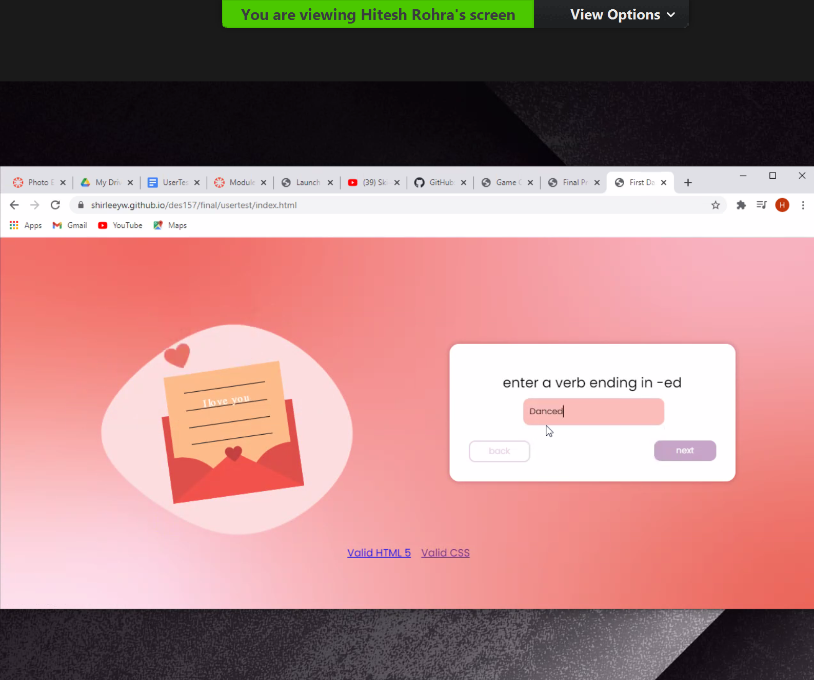

My Observations from 3 User Tests
After conducting three user tests, I noticed a few things about my project. I need to work on making my project more responsive because when I viewed it on the 3 testers’ screens, the alignment for the graphics and input boxes were off. Because of this, it interfered with the overall user experience, since things were misaligned. I was not able to replicate the same experience I had created for the testers. This can probably be solved by changing the positioning to relative instead of absolute for some of the objects and paying closer attention to the padding and margins I am adding to certain things on the page. I will do more research on ways to improve the responsiveness of my project.
When I asked the testers how the overall color scheme of the backgrounds and buttons could be improved, some pointed out the fact that my back buttons have too little contrast against the white background. Now that I look at it, I can see how it could be hard to see for some people who may have vision problems. Others also suggested incorporating more cool colors like in the last screen’s background throughout my project to add more variety, since I am mainly only using warm colors. This is definitely something I will consider; I might combine these two pieces of information and use a cool color for the buttons.
My last question for the testers was what their thoughts were on the motion graphics and one of them suggested I make the candy hearts on the last screen be animated as well, since all the other graphics in my project have some kind of animation. During the user test sessions, I also noticed that no one noticed the hover animation of the dating app icons; this may be something I will change, since they probably assumed all graphics would move by themselves! It was unclear that it would have a hover animation.